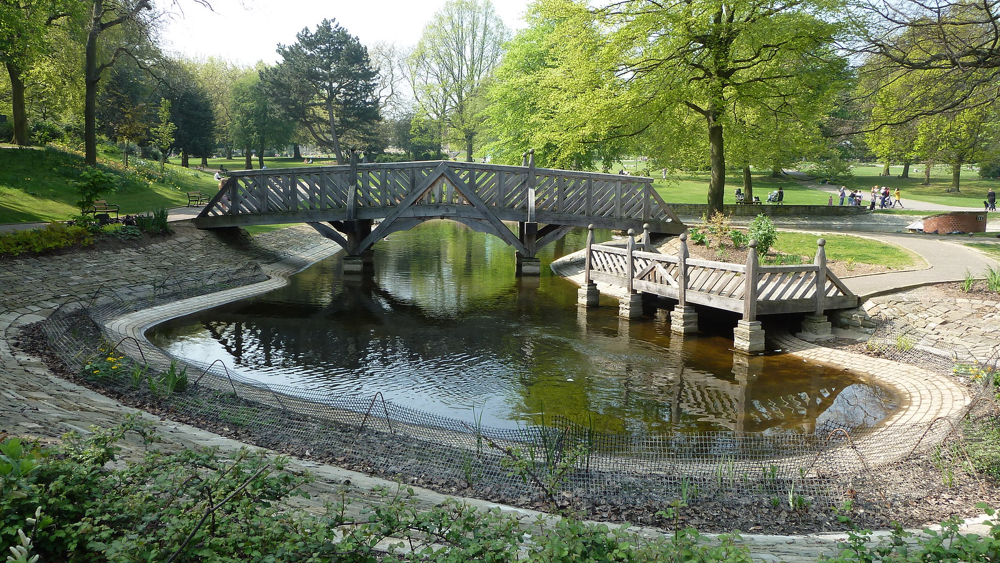
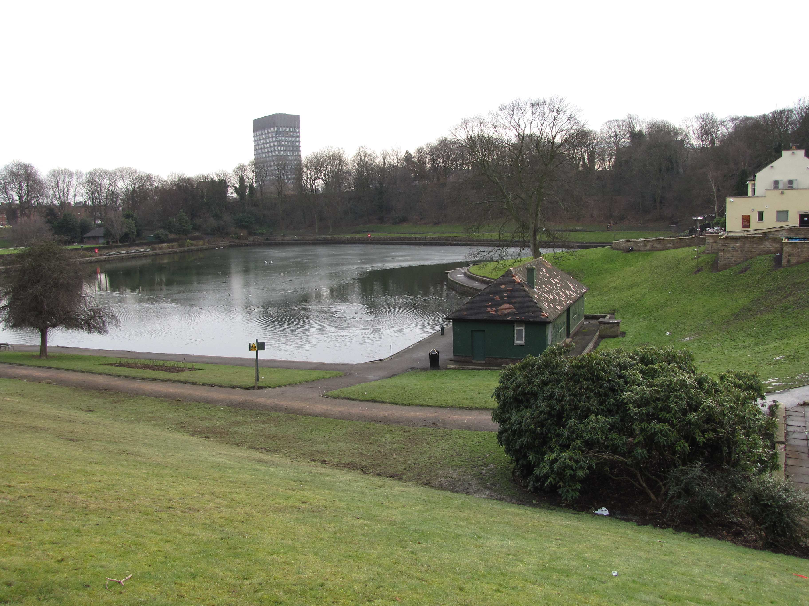
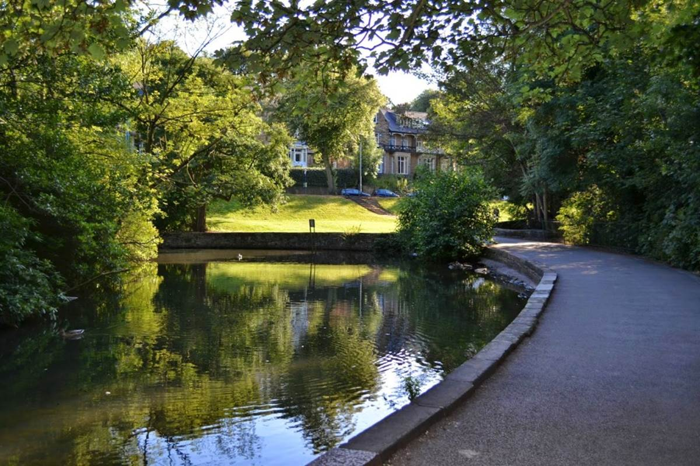
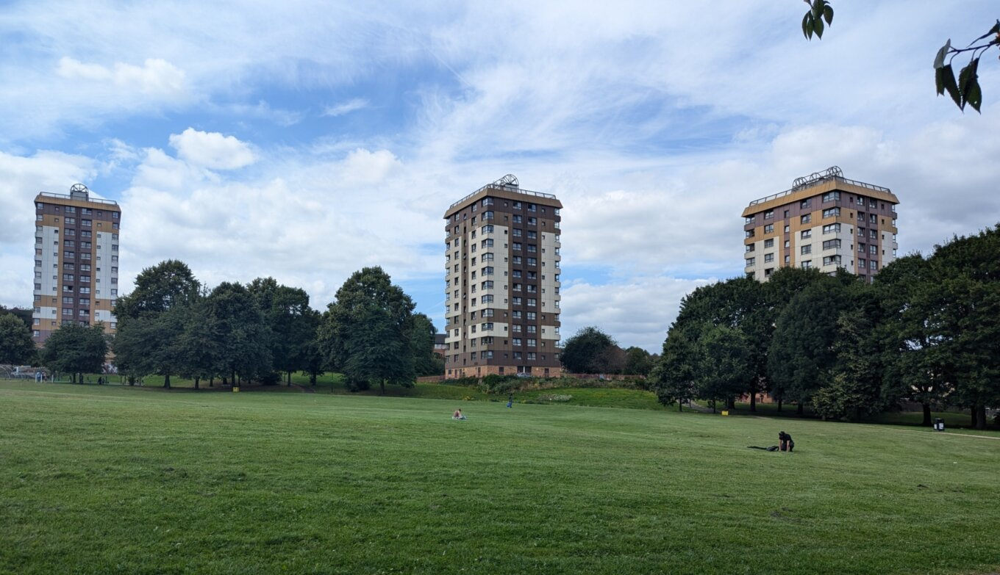
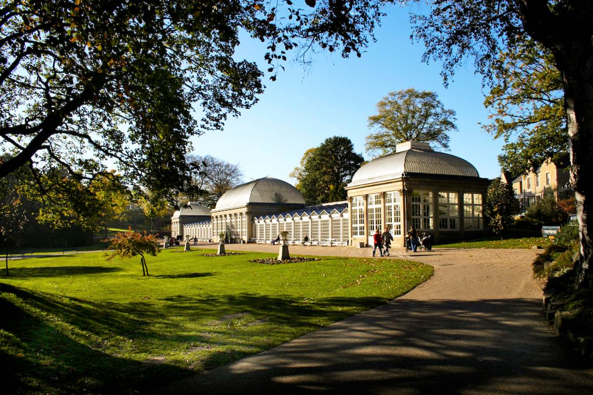

Whether you’re looking for a peaceful spot to relax, a scenic place to enjoy a packed lunch, or a green space to gather with friends, the areas around the University of Sheffield offer a variety of perfect picnic locations.
Here are some of the top spots recommended by Admins.
Weston Park is one of Sheffield's oldest public parks and is located right next to the University.
It has beautiful lawns, gardens, a duck pond, and is home to the Weston Park Museum, where you can explore exhibitions on Sheffield's history and natural environment.

The park was established in 1875 and has since been a popular relaxation sport for locals and students
The Bandstand often hosts small concerts in the summer, making it a lively spot for picnickers.
Crookes Valley Park
Adjacent to Weston Park, Crookes Valley Park is known for its pocturesque lake surrounded by green hills.
The lake is a central feature, and students oftenvisit to sit by the water or walk along its path.

The lake was once a reservoir and supplied water to Sheffield until the late 19th century.
Today, it serves as a serene place for outdoor relaxation and an occassional BBQ spot in the summer.
Endcliffe Park
A 20-minutes walk from campus, Endcliffe Park spans over 37 acres and features expansive fields, woodlands, and a lovely stream.
It's popular for larger gatherings, thanks to its size, and is perfect for a day out with friends.

Endcliffe Park was opened in 1887 to commemorate Queen Victoria's Golden Jubilee.
There's a stone marking the site where a plane crash took place in WWII, and each year, people pay their respects to the American crew who saved the local neighbourhood.
The Ponderosa
A bit of a hidden gem, The Ponderosa is situated between the University and the city center.
It's less crowded and is known for its spacious fields, walking paths, and a hillside thta offers a unique view of Sheffield's skyline.

Once an industrial site, The Ponderrosa was transformed into a public green space in the 1960s.
The name "Ponderosa" was inspired by the TV show Bonanza, giving it a quirky connection to American pop culture.
Sheffield Botanical Gardens
A 15-minutes from the University, Sheffield Botanical Garden is an ideal spot for a more curated and peaceful setting.
With 19 acres of beautiful plants and flowers, fountains, and glass pavilionss, it;s perfect for a scenic and relaxing picnic.

Opened in 1836, the Botanical Gardens has over 5,000 species of plants.
The glass pavillion, originalluy built in the Victorain era, were beautifully restored in 2003 and are now Grade II listed buildings.